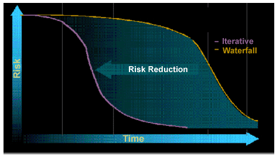

| Concept: Demonstrate Value Iteratively |
 |
|
DiscussionThere are several imperatives underlying this principle. The first one is that we must deliver incremental value to enable early and continuous feedback. This is done by dividing our project into a set of iterations. In each iteration, we perform some requirements, design, implementation, and testing of our application, thus producing a deliverable that is one step closer to the final solution. This allows us to demonstrate the application to end users and other stakeholders, or have them use the application directly, enabling them to provide rapid feedback on how we are doing. Are we moving in the right direction? Are stakeholders satisfied with what we have done so far? Do we need to change the features implemented so far? And finally, what additional features need to be implemented to add business value? By being able to satisfactorily answer these questions, we are more likely to build trust among stakeholders that the system we are developing will address their needs. We are also less likely to over-engineer our approach or to add capabilities that are not useful to the end user. The second imperative is to leverage demonstrations and feedback to adapt our plans. Rather than relying on assessing specifications, such as requirements specifications, design models, or plans, we need instead to assess how well the code developed thus far actually works. This means that me must use test results and demonstrations of working code to stakeholders to determine how well we are doing. This provides a good understanding of where we are, how fast the team is progressing, and whether we need to make course corrections to successfully complete the project. We can then use this information to update the overall plan for the project and develop detailed plans for the next iteration. The third underlying imperative is to embrace and manage change. Today's applications are too complex for the requirements, design, implementation, and test to align perfectly the first time through. Instead, the most effective application development methods embrace the inevitability of change. Through early and continuous feedback, we learn how to improve the application, and the iterative approach provides us with the opportunity to implement those changes incrementally. All this change needs to be managed by having the processes and tools in place so we can effectively manage change without hindering creativity. The fourth imperative underlying this principle is the need to drive out key risks early in the lifecycle, as illustrated in the diagram below.. We must address the major technical, business, and programmatic risks as early as possible, rather than postponing risk resolution towards the end of the project. This is done by continuously assessing what risks we are facing, and addressing the top remaining risks in the next iteration. In successful projects, early iterations involve stakeholder buy-in on a vision and high-level requirements, including architectural design, implementation and testing to mitigate technical risks. It is also important to retain information required to force decisions around what major reusable assets or commercial-of-the-shelf (COTS) software to use.
 Risk Reduction Profiles for Waterfall and Iterative Developments. A major goal with iterative development is to reduce risk early on. This is done by analyzing, prioritizing, and attacking top risks in each iteration (see: Supporting Material: Iterative Development). Additional guidance on helping organize the development lifecycle around iterations is provided in Concept: Iteration and Concept: Phase. |
© Copyright IBM Corp. 1987, 2006. All Rights Reserved. |